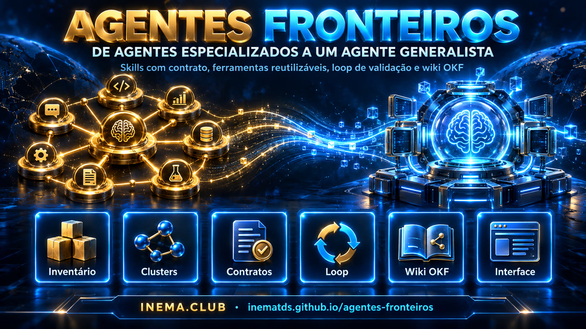
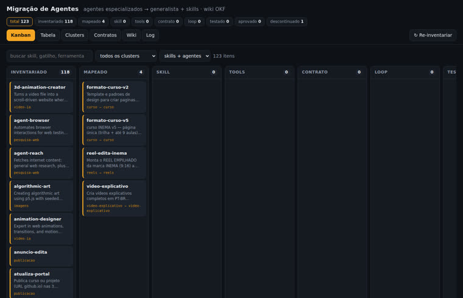
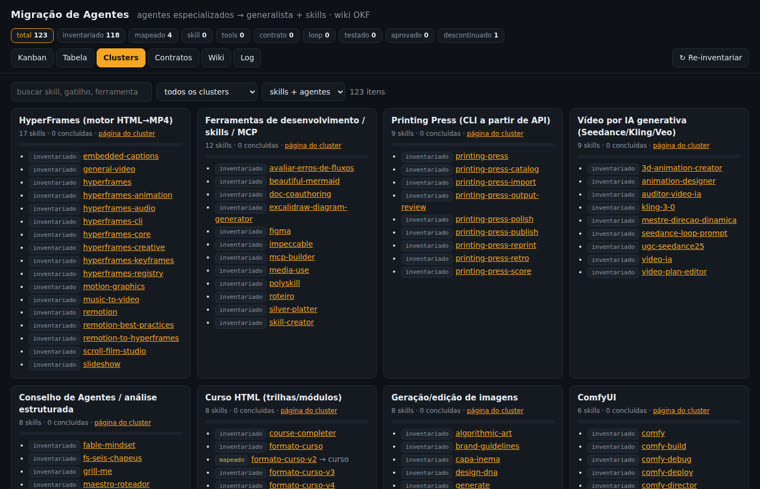
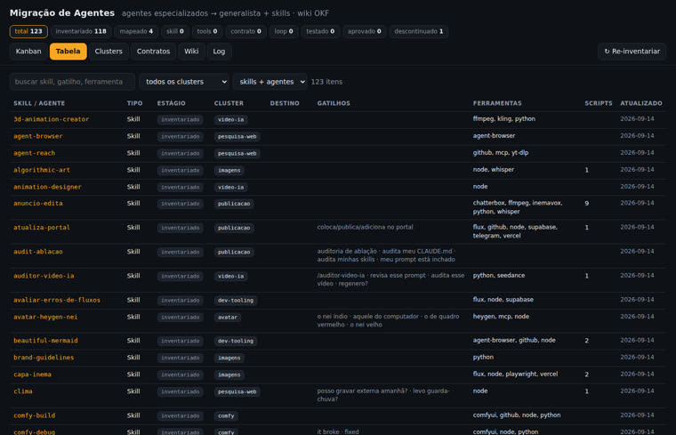

Inventário automático, clusters de sobreposição, contratos por skill, loop de validação e uma wiki OKF mantida pelo próprio agente — com interface de migração em kanban.

A tese: não precisamos criar mais agentes. Precisamos ensinar agentes gerais a trabalhar do nosso jeito. O repo junta o plano de migração, o modelo de pastas do eve (Vercel) e uma base de conhecimento no formato OKF mantida no estilo LLM wiki.
Inventariar → agente base → skills → tools → progressive disclosure → aprendizado → loop → contrato → router → sistema vivo. Cada etapa produz algo concreto no repo.
O agente é um diretório: agent/instructions.md, skills/, tools/, connections/, subagents/, schedules/ e evals/ ao lado. Convenção, não o runtime TypeScript.
Markdown com frontmatter YAML (type, sources, generated, verified, status). O agente ingere fontes brutas, consolida, indexa e registra no log. O estado de migração mora no frontmatter.
O inventário varre as skills e agentes instalados no Claude Code, gera uma página OKF por item, agrupa em clusters de sobreposição e a interface acompanha cada um pelos estágios do plano.
116 skills, 7 agentes, 16 clusters. Cada página traz gatilhos, ferramentas citadas, scripts candidatos a tools/ e o mapa da etapa 1.
Trigger, input, output, tools permitidas e acceptance verificável. A skill vira uma função operacional da empresa.
Planejar → executar → inspecionar → criticar → corrigir → testar. A primeira versão é rascunho; teto de 3 voltas.
Corrigir o sistema, não a saída: skill, regra, exemplo ou script. Uma linha em FALHAS.md e no wiki/log.md.
Sem framework, sem build, sem banco. O servidor da interface é stdlib; a wiki é texto em git.
Com PyYAML instalado.
# checar python3 -c "import yaml; print(yaml.__version__)"
O inventário lê o que está instalado na máquina.
ls ~/.claude/skills | wc -l ls ~/.claude/agents
Ou usar a pasta local do projeto.
git clone https://github.com/inematds/agentes-fronteiros cd agentes-fronteiros
Três comandos. O resto é decisão humana na interface e trabalho do agente nas skills.
Varre as skills e agentes instalados e escreve uma página OKF por item em wiki/skills/ e wiki/agentes/, mais os clusters de sobreposição. É idempotente e preserva o estágio de migração já decidido.
python3 tools/inventario.py # skills: 116 agentes: 7 clusters: 16
Falha se um conceito não tiver type, se houver link quebrado, related inexistente ou estágio inválido. Rodar antes de commitar.
python3 tools/wiki_lint.py # wiki: 149 conceitos · 0 erros
Kanban por estágio, tabela filtrável, clusters com barra de progresso, contratos e leitor da wiki. Clicar num card abre a gaveta para mudar estágio, cluster, destino e notas — gravado direto no frontmatter da página e no wiki/log.md.
python3 interface/server.py # http://127.0.0.1:8765
Começar por reels, video-explicativo e curso. O contrato já está rascunhado; a skill migrada nasce do template e copia o contrato para o lado do SKILL.md.
# contrato e template cat migracao/contratos/reels.yaml mkdir -p agent/skills/reels && cp migracao/template-SKILL.md agent/skills/reels/SKILL.md cp migracao/contratos/reels.yaml agent/skills/reels/contrato.yaml
Cada skill só sobe para testado depois de passar em duas tarefas de evals/tarefas/, e para aprovado depois de uso real sem correção. Se houve correção, uma linha em FALHAS.md e o ajuste na skill.
ls evals/tarefas/ # reels-01.md · video-explicativo-01.md · curso-01.md
Fonte nova entra em wiki/raw/ com data no nome e nunca é editada. O agente consolida em conceitos, preenche sources e generated, regenera os índices e registra no log. Convenções completas em wiki/SCHEMA.md.
cp nova-fonte.md wiki/raw/2026-09-20-nova-fonte.md # agente: consolidar → conceitos/ · index.md · log.md python3 tools/wiki_lint.py
Capturas do servidor local logo após o primeiro inventário, com os três pilotos já marcados como mapeados.



A ordem segue a estratégia prática do plano: pilotos primeiro, depois os clusters com mais sobreposição.